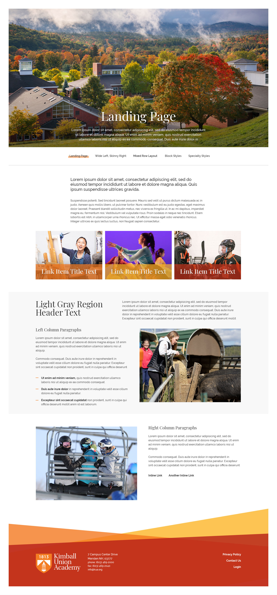
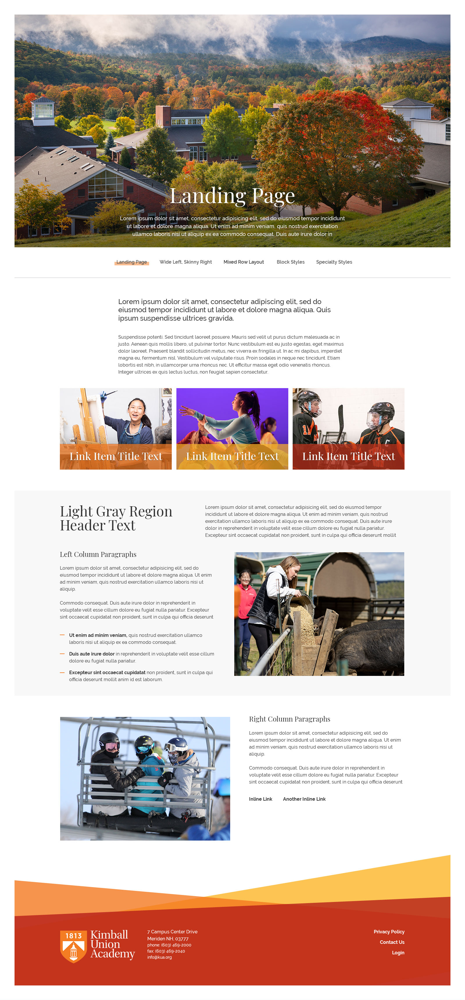

Provided with this design are three sample interior pages that showcase how one may layout a page. They vary in scope and style but are meant to showcase how different typica pages on a school website are laid out.
The first of our layouts has been dubbed the "Landing Page" layout for it's overall scope of content and somewhat centered layout. This type of layout is typical for key pages within a section of a site, like "A KUA Education" or "Life at KUA". Basically, any page that has a lot of important information to convey and typically the first page within a section can be considered a landing page.